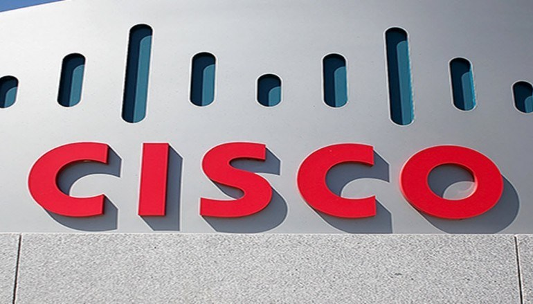
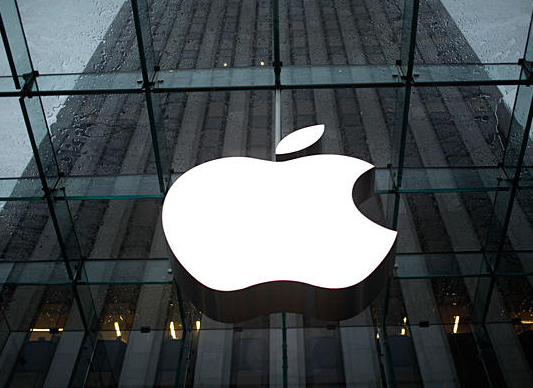

Cisco derrota caso de patente da Centripetal que levou a prêmio de US$ 2,75 bilhões
12 Dez (Reuters) - Um juiz federal da Virgínia rejeitou as alegações de violação de patentes da empresa de cibersegurança Centripetal Networks contra a Cisco Systems (CSCO. O) em uma briga multibilionária pela tecnologia de segurança de redes. Um juiz diferente no mesmo tribunal, o juiz distrital Henry Morgan, concedeu à Centripetal US$ 2,75 bilhões no caso em 2020, marcando o maior prêmio de indenização por patentes da história dos EUA. Um tribunal federal de apelações mais tarde anulou essa sentença por motivos éticos porque a esposa de Morgan era proprietária de ações da Cisco....
Ler mais

Apple agora exige consentimento de um juiz para entregar dados de notificação push
WASHINGTON, 12 Dez (Reuters) - A Apple (AAPL. O) disse que agora exige a ordem de um juiz para entregar informações sobre a notificação push de seus clientes às autoridades policiais, colocando a política da fabricante do iPhone em linha com a rival Google e aumentando o obstáculo que as autoridades devem superar para obter dados de aplicativos sobre os usuários. A nova política não foi formalmente anunciada, mas apareceu em algum momento nos últimos dias nas diretrizes de aplicação da lei disponíveis publicamente da Apple. Segue-se a revelação do senador do Oregon, Ron Wyden, de que as autoridades estavam a solicitar esses dados à Apple, bem como à Google, a unidade da Alphabet (GOOGL. O) que faz o sistema operacional para telefones Android....
Ler mais

Blue Origin, de Bezos, planeja voo de foguete New Shepard após 15 meses de aterramento
12 Dez (Reuters) - O empreendimento espacial Blue Origin, de Jeff Bezos, está a planear regressar ao voo do seu foguetão suborbital New Shepard já em 18 de Dezembro, disse a empresa na terça-feira, enquanto procura retomar o seu negócio de turismo espacial. "Estamos visando uma janela de lançamento que se abre em 18 de dezembro para nossa próxima missão de carga útil New Shepard", escreveu a Blue Origin na rede social X, anteriormente conhecida como Twitter. Não há humanos, mas 33 cargas úteis de ciência e pesquisa estarão a bordo, acrescentou a empresa, referindo-se à carga que apoiará experimentos no espaço....
Ler mais